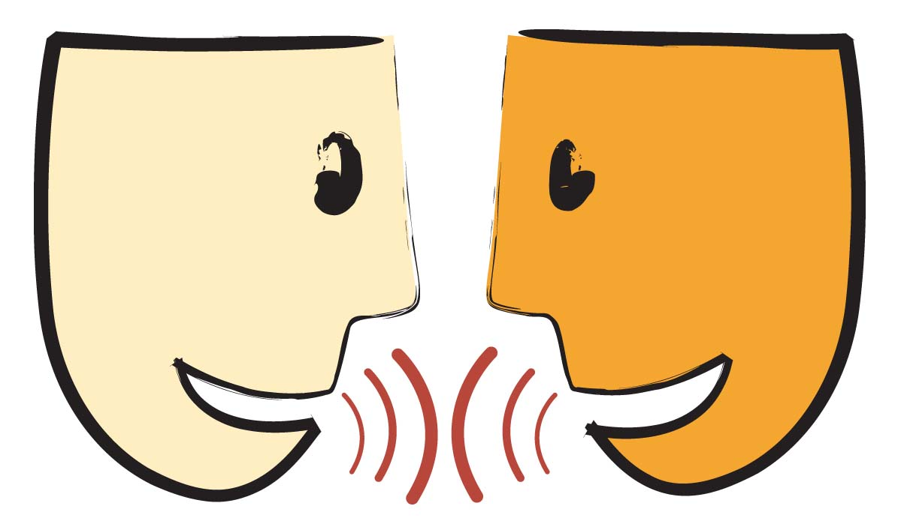

Talks |
 |
This rather young page contains pdf files of some talks I have had the occasion to give (provided that such pdf exists).
Complex braid groups
- "Sous-groupes paraboliques des groupes de tresses complexes" (Journées jeunes chercheurs et chercheuses en topologie, 2025)
- "Groupoïdes de Garside et groupes de tresses complexes" (Colloque tournant du RT algèbre, 2025)
- "Garside groupoids and complex braid groups" (PhD defense, 2024)
- "Catégories de Garside paraboliques et applications aux groupes de tresses complexes" (Gaston Darboux seminar of the IMAG, 2024)
- "Description de l'espace des orbites régulières d'un groupe de réflexions complexes" (Topology seminar of the laboratoire Paul Painlevé, 2024)
- (several versions, 2023)
- "Bessis braid category of the complex braid group B31" (Winter Braids XII, 2023)
- (several versions, 2022)
Garside Theory
- "Groupoïdes de Garside paraboliques et applications aux groupes de tresses complexes" (Algebra and geometry seminar of the LMNO, 2025)
- "Des partitions non-croisées à l'étude des sous-groupes paraboliques des groupes de tresses complexes" (Séminaire SPACE, 2024)
- "Homology of categories and the Dehornoy-Lafont order complex" (Seminar of the "Ouragan" team, 2024)
- "Homology computations for complex braid groups with the Dehornoy-Lafont complex" (Meeting of the GdR Homotopy Theory Application, 2023)
- (several versions)
- "Homology of a category and the Dehornoy-Lafont order complex" (Paris algebra seminar, 2023)
- "Garside monoid for the Artin group associated to finite Coxeter groups" (PhD student's seminar of the LAMFA, 2022)
Category Theory
- "Représentations de carquois et catégories dérivées, exemple du type A" (Groupe de Travail dg-catégories, 2023)
Coxeter Groups and Lie theory
- "Décomposition de Bruhat et action sur la variété de drapeaux" (pre-seminar of the GATo Seminar of the LAMFA, 2023)
- "Garside monoid for the Artin group associated to finite Coxeter groups" (PhD student's seminar of the LAMFA, 2022)